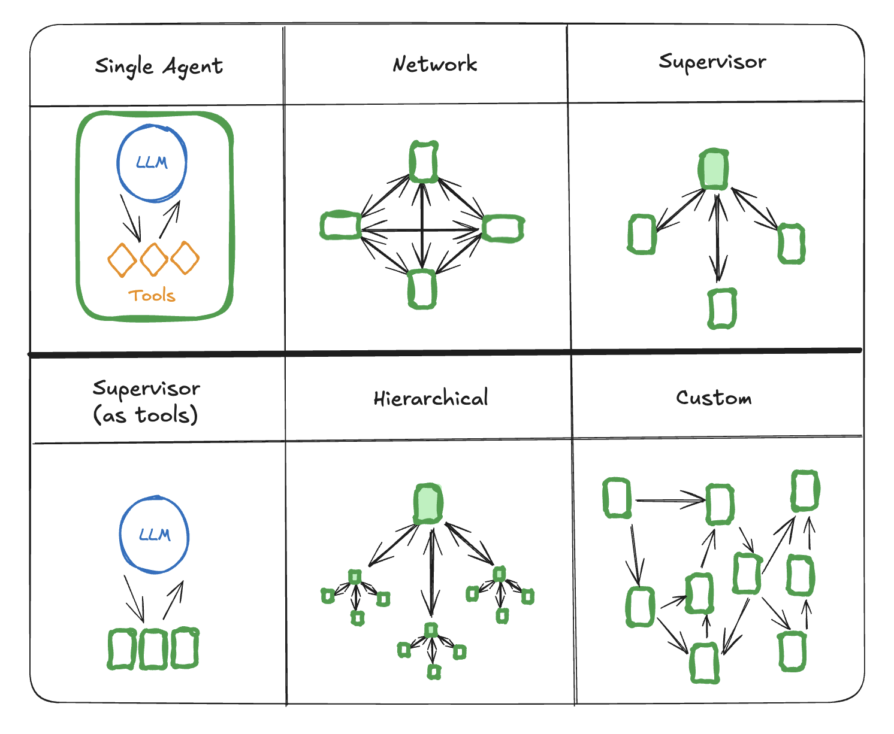

多代理系统¶
一个代理是一个使用大型语言模型（LLM）来决定应用程序控制流的系统。随着这些系统的开发，它们可能会随着时间变得越来越复杂，从而更难管理和扩展。例如，你可能会遇到以下问题：
- 代理拥有的工具过多，在决定下一步调用哪个工具时做出糟糕的决策
- 上下文变得过于复杂，单个代理难以跟踪
- 系统需要多个专业领域（例如，规划师、研究员、数学专家等）
为了解决这些问题，你可以考虑将应用程序分解成多个更小、独立的代理，并将它们组合成一个多代理系统。这些独立的代理可以像一个提示和一次 LLM 调用那样简单，也可以像一个 ReAct 代理那样复杂（甚至更复杂！）。
使用多代理系统的主要优点是：
- 模块化：分离的代理使开发、测试和维护代理系统变得更容易。
- 专业化：你可以创建专注于特定领域的专家代理，这有助于提高整个系统的性能。
- 控制：你可以明确控制代理如何通信（而不是依赖函数调用）。
多代理架构¶

在多代理系统中，有几种连接代理的方法：
- 网络：每个代理都可以与所有其他代理通信。任何代理都可以决定下一步调用哪个其他代理。
- 主管：每个代理都与一个主管代理通信。主管代理决定下一步应该调用哪个代理。
- 主管（工具调用）：这是主管架构的一个特例。单个代理可以表示为工具。在这种情况下，主管代理使用一个支持工具调用的 LLM 来决定调用哪个代理工具，以及传递给这些代理的参数。
- 分层：你可以定义一个具有主管之主管的多代理系统。这是主管架构的泛化，允许更复杂的控制流。
- 自定义多代理工作流：每个代理只与部分代理通信。流程的部分是确定性的，并且只有某些代理可以决定下一步调用哪个其他代理。
交接¶
在多代理架构中，代理可以表示为图节点。每个代理节点执行其步骤，并决定是结束执行还是路由到另一个代理，包括可能路由到自身（例如，循环运行）。多代理交互中的一个常见模式是交接，即一个代理将控制权移交给另一个代理。交接允许你指定：
- 目标：要导航到的目标代理（例如，要去的节点的名称）
- 有效载荷：要传递给该代理的信息（例如，状态更新）
为了在 LangGraph 中实现交接，代理节点可以返回Command对象，该对象允许你结合控制流和状态更新。
def agent(state) -> Command[Literal["agent", "another_agent"]]:
# the condition for routing/halting can be anything, e.g. LLM tool call / structured output, etc.
goto = get_next_agent(...) # 'agent' / 'another_agent'
return Command(
# Specify which agent to call next
goto=goto,
# Update the graph state
update={"my_state_key": "my_state_value"}
)
在更复杂的场景中，如果每个代理节点本身都是一个图（即子图），那么其中一个代理子图中的节点可能希望导航到不同的代理。例如，如果你有两个代理 alice 和 bob（父图中的子图节点），并且 alice 需要导航到 bob，你可以在 Command 对象中设置 graph=Command.PARENT
def some_node_inside_alice(state):
return Command(
goto="bob",
update={"my_state_key": "my_state_value"},
# specify which graph to navigate to (defaults to the current graph)
graph=Command.PARENT,
)
注意
如果你需要支持使用 Command(graph=Command.PARENT) 进行通信的子图的可视化，你需要将它们包装在一个带有 Command 注解的节点函数中，例如，而不是这样：
你需要这样做：
作为工具的交接¶
最常见的代理类型之一是工具调用代理。对于这些类型的代理，一种常见模式是将交接包装在工具调用中，例如：
API 参考：tool
from langchain_core.tools import tool
def transfer_to_bob():
"""Transfer to bob."""
return Command(
# name of the agent (node) to go to
goto="bob",
# data to send to the agent
update={"my_state_key": "my_state_value"},
# indicate to LangGraph that we need to navigate to
# agent node in a parent graph
graph=Command.PARENT,
)
这是从工具更新图状态的特例，除了状态更新外，还包括控制流。
重要
如果你想使用返回 Command 的工具，你可以使用预置的 create_react_agent / ToolNode 组件，或者实现你自己的工具执行节点，该节点收集工具返回的 Command 对象并返回它们的列表，例如：
现在我们来仔细看看不同的多代理架构。
网络¶
在这种架构中，代理被定义为图节点。每个代理都可以与所有其他代理通信（多对多连接），并且可以决定下一步调用哪个代理。这种架构适用于没有明确代理层次结构或特定代理调用顺序的问题。
API 参考：ChatOpenAI | Command | StateGraph | START | END
from typing import Literal
from langchain_openai import ChatOpenAI
from langgraph.types import Command
from langgraph.graph import StateGraph, MessagesState, START, END
model = ChatOpenAI()
def agent_1(state: MessagesState) -> Command[Literal["agent_2", "agent_3", END]]:
# you can pass relevant parts of the state to the LLM (e.g., state["messages"])
# to determine which agent to call next. a common pattern is to call the model
# with a structured output (e.g. force it to return an output with a "next_agent" field)
response = model.invoke(...)
# route to one of the agents or exit based on the LLM's decision
# if the LLM returns "__end__", the graph will finish execution
return Command(
goto=response["next_agent"],
update={"messages": [response["content"]]},
)
def agent_2(state: MessagesState) -> Command[Literal["agent_1", "agent_3", END]]:
response = model.invoke(...)
return Command(
goto=response["next_agent"],
update={"messages": [response["content"]]},
)
def agent_3(state: MessagesState) -> Command[Literal["agent_1", "agent_2", END]]:
...
return Command(
goto=response["next_agent"],
update={"messages": [response["content"]]},
)
builder = StateGraph(MessagesState)
builder.add_node(agent_1)
builder.add_node(agent_2)
builder.add_node(agent_3)
builder.add_edge(START, "agent_1")
network = builder.compile()
主管¶
在这种架构中，我们将代理定义为节点，并添加一个主管节点（LLM），该节点决定接下来应该调用哪个代理节点。我们使用Command根据主管的决策将执行路由到适当的代理节点。这种架构也适用于并行运行多个代理或使用Map-Reduce模式。
API 参考：ChatOpenAI | Command | StateGraph | START | END
from typing import Literal
from langchain_openai import ChatOpenAI
from langgraph.types import Command
from langgraph.graph import StateGraph, MessagesState, START, END
model = ChatOpenAI()
def supervisor(state: MessagesState) -> Command[Literal["agent_1", "agent_2", END]]:
# you can pass relevant parts of the state to the LLM (e.g., state["messages"])
# to determine which agent to call next. a common pattern is to call the model
# with a structured output (e.g. force it to return an output with a "next_agent" field)
response = model.invoke(...)
# route to one of the agents or exit based on the supervisor's decision
# if the supervisor returns "__end__", the graph will finish execution
return Command(goto=response["next_agent"])
def agent_1(state: MessagesState) -> Command[Literal["supervisor"]]:
# you can pass relevant parts of the state to the LLM (e.g., state["messages"])
# and add any additional logic (different models, custom prompts, structured output, etc.)
response = model.invoke(...)
return Command(
goto="supervisor",
update={"messages": [response]},
)
def agent_2(state: MessagesState) -> Command[Literal["supervisor"]]:
response = model.invoke(...)
return Command(
goto="supervisor",
update={"messages": [response]},
)
builder = StateGraph(MessagesState)
builder.add_node(supervisor)
builder.add_node(agent_1)
builder.add_node(agent_2)
builder.add_edge(START, "supervisor")
supervisor = builder.compile()
查看此教程，了解主管多代理架构的示例。
主管（工具调用）¶
在主管架构的这个变体中，我们定义了一个主管代理，负责调用子代理。子代理作为工具暴露给主管，主管代理决定下一步调用哪个工具。主管代理遵循标准实现，即 LLM 在一个 while 循环中运行，不断调用工具直到决定停止。
API 参考：ChatOpenAI | InjectedState | create_react_agent
from typing import Annotated
from langchain_openai import ChatOpenAI
from langgraph.prebuilt import InjectedState, create_react_agent
model = ChatOpenAI()
# this is the agent function that will be called as tool
# notice that you can pass the state to the tool via InjectedState annotation
def agent_1(state: Annotated[dict, InjectedState]):
# you can pass relevant parts of the state to the LLM (e.g., state["messages"])
# and add any additional logic (different models, custom prompts, structured output, etc.)
response = model.invoke(...)
# return the LLM response as a string (expected tool response format)
# this will be automatically turned to ToolMessage
# by the prebuilt create_react_agent (supervisor)
return response.content
def agent_2(state: Annotated[dict, InjectedState]):
response = model.invoke(...)
return response.content
tools = [agent_1, agent_2]
# the simplest way to build a supervisor w/ tool-calling is to use prebuilt ReAct agent graph
# that consists of a tool-calling LLM node (i.e. supervisor) and a tool-executing node
supervisor = create_react_agent(model, tools)
分层¶
随着你向系统中添加更多代理，主管可能变得难以管理所有这些代理。主管可能开始在决定下一步调用哪个代理时做出糟糕的决策，或者上下文可能变得过于复杂，单个主管难以跟踪。换句话说，你最终会遇到最初促使多代理架构出现的问题。
为了解决这个问题，你可以分层设计你的系统。例如，你可以创建由单个主管管理的独立、专业化的代理团队，以及一个管理这些团队的顶层主管。
API 参考：ChatOpenAI | StateGraph | START | END | Command
from typing import Literal
from langchain_openai import ChatOpenAI
from langgraph.graph import StateGraph, MessagesState, START, END
from langgraph.types import Command
model = ChatOpenAI()
# define team 1 (same as the single supervisor example above)
def team_1_supervisor(state: MessagesState) -> Command[Literal["team_1_agent_1", "team_1_agent_2", END]]:
response = model.invoke(...)
return Command(goto=response["next_agent"])
def team_1_agent_1(state: MessagesState) -> Command[Literal["team_1_supervisor"]]:
response = model.invoke(...)
return Command(goto="team_1_supervisor", update={"messages": [response]})
def team_1_agent_2(state: MessagesState) -> Command[Literal["team_1_supervisor"]]:
response = model.invoke(...)
return Command(goto="team_1_supervisor", update={"messages": [response]})
team_1_builder = StateGraph(Team1State)
team_1_builder.add_node(team_1_supervisor)
team_1_builder.add_node(team_1_agent_1)
team_1_builder.add_node(team_1_agent_2)
team_1_builder.add_edge(START, "team_1_supervisor")
team_1_graph = team_1_builder.compile()
# define team 2 (same as the single supervisor example above)
class Team2State(MessagesState):
next: Literal["team_2_agent_1", "team_2_agent_2", "__end__"]
def team_2_supervisor(state: Team2State):
...
def team_2_agent_1(state: Team2State):
...
def team_2_agent_2(state: Team2State):
...
team_2_builder = StateGraph(Team2State)
...
team_2_graph = team_2_builder.compile()
# define top-level supervisor
builder = StateGraph(MessagesState)
def top_level_supervisor(state: MessagesState) -> Command[Literal["team_1_graph", "team_2_graph", END]]:
# you can pass relevant parts of the state to the LLM (e.g., state["messages"])
# to determine which team to call next. a common pattern is to call the model
# with a structured output (e.g. force it to return an output with a "next_team" field)
response = model.invoke(...)
# route to one of the teams or exit based on the supervisor's decision
# if the supervisor returns "__end__", the graph will finish execution
return Command(goto=response["next_team"])
builder = StateGraph(MessagesState)
builder.add_node(top_level_supervisor)
builder.add_node("team_1_graph", team_1_graph)
builder.add_node("team_2_graph", team_2_graph)
builder.add_edge(START, "top_level_supervisor")
builder.add_edge("team_1_graph", "top_level_supervisor")
builder.add_edge("team_2_graph", "top_level_supervisor")
graph = builder.compile()
自定义多代理工作流¶
在这种架构中，我们将单个代理作为图节点添加，并提前在自定义工作流中定义代理的调用顺序。在 LangGraph 中，工作流可以通过两种方式定义：
-
显式控制流（普通边）：LangGraph 允许你通过普通图边显式定义应用程序的控制流（即代理如何通信的顺序）。这是上述架构中最确定性的变体——我们总是提前知道下一个将要调用的代理。
-
动态控制流（Command）：在 LangGraph 中，你可以允许 LLM 决定应用程序控制流的部分。这可以通过使用
Command来实现。一个特殊情况是主管工具调用架构。在这种情况下，驱动主管代理的工具调用 LLM 将决定工具（代理）的调用顺序。
API 参考：ChatOpenAI | StateGraph | START
from langchain_openai import ChatOpenAI
from langgraph.graph import StateGraph, MessagesState, START
model = ChatOpenAI()
def agent_1(state: MessagesState):
response = model.invoke(...)
return {"messages": [response]}
def agent_2(state: MessagesState):
response = model.invoke(...)
return {"messages": [response]}
builder = StateGraph(MessagesState)
builder.add_node(agent_1)
builder.add_node(agent_2)
# define the flow explicitly
builder.add_edge(START, "agent_1")
builder.add_edge("agent_1", "agent_2")
通信与状态管理¶
构建多代理系统时最重要的事情是弄清楚代理如何通信。
代理之间通信的一种常见、通用的方式是通过消息列表。这引出了以下问题：
- 代理是通过交接还是工具调用进行通信？
- 哪些消息从一个代理传递到下一个代理？
- 在消息列表中如何表示交接？
- 你如何管理子代理的状态？
此外，如果你正在处理更复杂的代理或希望将单个代理状态与多代理系统状态分开，你可能需要使用不同的状态模式。
交接与工具调用¶
在代理之间传递的“有效载荷”是什么？在上述大多数架构中，代理通过交接进行通信，并将图状态作为交接有效载荷的一部分进行传递。具体来说，代理将消息列表作为图状态的一部分传递。在带有工具调用的主管的情况下，有效载荷是工具调用参数。

代理间的消息传递¶
代理之间最常见的通信方式是通过共享状态通道，通常是消息列表。这假设状态中总是有至少一个代理共享的通道（键）（例如，messages）。当通过共享消息列表进行通信时，还有一个额外的考虑：代理应该共享其思维过程的完整历史还是只共享最终结果？

共享完整思维过程¶
代理可以与所有其他代理共享其思维过程的完整历史（即，“草稿本”）。这个“草稿本”通常看起来像一个消息列表。共享完整思维过程的好处是，它可能帮助其他代理做出更好的决策，并提高整个系统的推理能力。缺点是，随着代理数量和复杂性的增长，“草稿本”将迅速增长，可能需要额外的内存管理策略。
只共享最终结果¶
代理可以拥有自己的私有“草稿本”，并且只与其余代理共享最终结果。这种方法可能更适用于具有许多代理或更复杂的代理的系统。在这种情况下，你需要定义具有不同状态模式的代理。
对于作为工具调用的代理，主管根据工具模式确定输入。此外，LangGraph 允许在运行时将状态传递给单个工具，因此下属代理可以在需要时访问父状态。
在消息中指示代理名称¶
在消息中指示特定 AI 消息来自哪个代理会很有帮助，特别是对于冗长的消息历史。一些 LLM 提供商（如 OpenAI）支持向消息添加 name 参数——你可以使用它将代理名称附加到消息中。如果不支持，你可以考虑手动将代理名称注入到消息内容中，例如，<agent>alice</agent><message>来自 alice 的消息</message>。
在消息历史中表示交接¶
交接通常通过 LLM 调用专用的交接工具来完成。这表示为带有工具调用的AI 消息，并传递给下一个代理（LLM）。大多数 LLM 提供商不支持接收带有工具调用的 AI 消息，而没有相应的工具消息。
因此你有两种选择：
- 在消息列表中添加额外的工具消息，例如，“已成功转移到代理 X”
- 移除带有工具调用的 AI 消息
实际上，我们发现大多数开发者选择选项 (1)。
子代理的状态管理¶
一种常见的做法是让多个代理在共享消息列表上通信，但只将它们的最终消息添加到列表中。这意味着任何中间消息（例如，工具调用）都不会保存在此列表中。
如果你确实想保存这些消息，以便如果将来调用此特定子代理，你可以将这些消息传回，该怎么办？
有两种高级方法可以实现这一点：
- 将这些消息存储在共享消息列表中，但在将列表传递给子代理 LLM 之前对其进行过滤。例如，你可以选择过滤掉来自其他代理的所有工具调用。
- 在子代理的图状态中为每个代理存储一个单独的消息列表（例如，
alice_messages）。这将是它们对消息历史的“视图”。
使用不同的状态模式¶
一个代理可能需要与其余代理有不同的状态模式。例如，一个搜索代理可能只需要跟踪查询和检索到的文档。在 LangGraph 中有两种方法可以实现这一点：